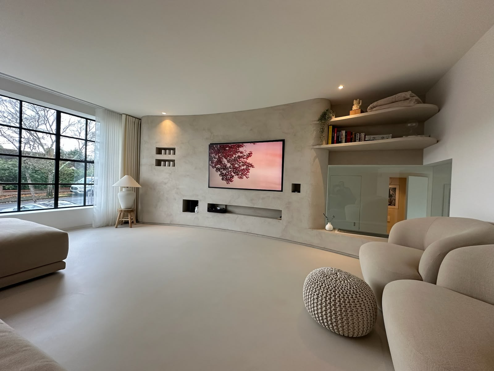
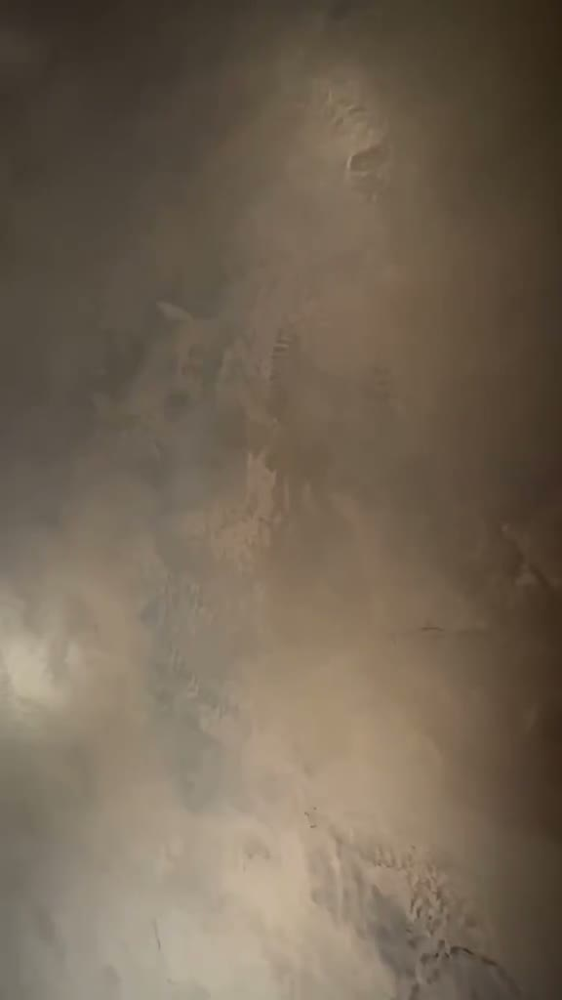
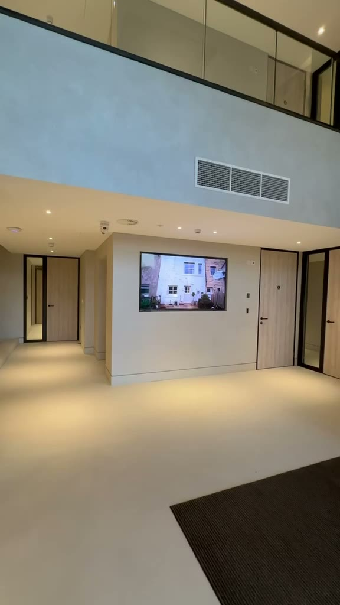

01
Light
Warm plaster minimal — the site feels like the finish itself.
View direction →
02
Dark
Cinematic luxury — bronze on near-black, images spotlit.
View direction →
03
Film
Your video plays under the scrollbar — scroll forward, it plays; scroll back, it rewinds.
View direction →
04
Frame
A small floating video that swallows the screen, plus an arch reveal.
View direction →